With simple gate and combinational logic circuits, there is a definite output state for any given input state. Take the truth table of an OR gate, for instance:
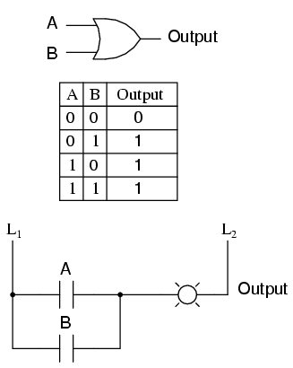
For each of the four possible combinations of input states (0-0, 0-1, 1-0, and 1-1), there is one, definite, unambiguous output state. Whether we're dealing with a multitude of cascaded gates or a single gate, that output state is determined by the truth table(s) for the gate(s) in the circuit, and nothing else.
However, if we alter this gate circuit so as to give signal feedback from the output to one of the inputs, strange things begin to happen:
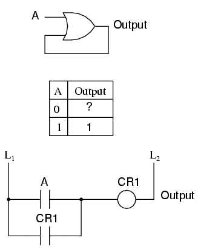
We know that if A is 1, the output must be 1, as well. Such is the nature of an OR gate: any "high" (1) input forces the output "high" (1). If A is "low" (0), however, we cannot guarantee the logic level or state of the output in our truth table. Since the output feeds back to one of the OR gate's inputs, and we know that any 1 input to an OR gates makes the output 1, this circuit will "latch" in the 1 output state after any time that A is 1. When A is 0, the output could be either 0 or 1, depending on the circuit's prior state! The proper way to complete the above truth table would be to insert the word latch in place of the question mark, showing that the output maintains its last state when A is 0.
Any digital circuit employing feedback is called a multivibrator. The example we just explored with the OR gate was a very simple example of what is called a bistable multivibrator. It is called "bistable" because it can hold stable in one of two possible output states, either 0 or 1. There are also monostable multivibrators, which have only one stable output state (that other state being momentary), which we'll explore later; and astable multivibrators, which have no stable state (oscillating back and forth between an output of 0 and 1).
A very simple astable multivibrator is an inverter with the output fed directly back to the input:
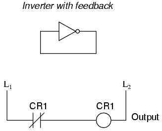
When the input is 0, the output switches to 1. That 1 output gets fed back to the input as a 1. When the input is 1, the output switches to 0. That 0 output gets fed back to the input as a 0, and the cycle repeats itself. The result is a high frequency (several megahertz) oscillator, if implemented with a solid-state (semiconductor) inverter gate:
If implemented with relay logic, the resulting oscillator will be considerably slower, cycling at a frequency well within the audio range. The buzzer or vibrator circuit thus formed was used extensively in early radio circuitry, as a way to convert steady, low-voltage DC power into pulsating DC power which could then be stepped up in voltage through a transformer to produce the high voltage necessary for operating the vacuum tube amplifiers. Henry Ford's engineers also employed the buzzer/transformer circuit to create continuous high voltage for operating the spark plugs on Model T automobile engines:
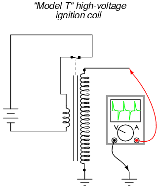
Borrowing terminology from the old mechanical buzzer (vibrator) circuits, solid-state circuit engineers referred to any circuit with two or more vibrators linked together as a multivibrator. The astable multivibrator mentioned previously, with only one "vibrator," is more commonly implemented with multiple gates, as we'll see later.
The most interesting and widely used multivibrators are of the bistable variety, so we'll explore them in detail now.
A bistable multivibrator has two stable states, as indicated by the prefix bi in its name. Typically, one state is referred to as set and the other as reset. The simplest bistable device, therefore, is known as a set-reset, or S-R, latch.
To create an S-R latch, we can wire two NOR gates in such a way that the output of one feeds back to the input of another, and vice versa, like this:
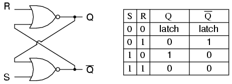
The Q and not-Q outputs are supposed to be in opposite states. I say "supposed to" because making both the S and R inputs equal to 1 results in both Q and not-Q being 0. For this reason, having both S and R equal to 1 is called an invalid or illegal state for the S-R multivibrator. Otherwise, making S=1 and R=0 "sets" the multivibrator so that Q=1 and not-Q=0. Conversely, making R=1 and S=0 "resets" the multivibrator in the opposite state. When S and R are both equal to 0, the multivibrator's outputs "latch" in their prior states. Note how the same multivibrator function can be implemented in ladder logic, with the same results:
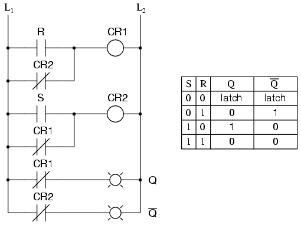
By definition, a condition of Q=1 and not-Q=0 is set. A condition of Q=0 and not-Q=1 is reset. These terms are universal in describing the output states of any multivibrator circuit.
The astute observer will note that the initial power-up condition of either the gate or ladder variety of S-R latch is such that both gates (coils) start in the de-energized mode. As such, one would expect that the circuit will start up in an invalid condition, with both Q and not-Q outputs being in the same state. Actually, this is true! However, the invalid condition is unstable with both S and R inputs inactive, and the circuit will quickly stabilize in either the set or reset condition because one gate (or relay) is bound to react a little faster than the other. If both gates (or coils) were precisely identical, they would oscillate between high and low like an astable multivibrator upon power-up without ever reaching a point of stability! Fortunately for cases like this, such a precise match of components is a rare possibility.
It must be noted that although an astable (continually oscillating) condition would be extremely rare, there will most likely be a cycle or two of oscillation in the above circuit, and the final state of the circuit (set or reset) after power-up would be unpredictable. The root of the problem is a race condition between the two relays CR1 and CR2.
A race condition occurs when two mutually-exclusive events are simultaneously initiated through different circuit elements by a single cause. In this case, the circuit elements are relays CR1 and CR2, and their de-energized states are mutually exclusive due to the normally-closed interlocking contacts. If one relay coil is de-energized, its normally-closed contact will keep the other coil energized, thus maintaining the circuit in one of two states (set or reset). Interlocking prevents both relays from latching. However, if both relay coils start in their de-energized states (such as after the whole circuit has been de-energized and is then powered up) both relays will "race" to become latched on as they receive power (the "single cause") through the normally-closed contact of the other relay. One of those relays will inevitably reach that condition before the other, thus opening its normally-closed interlocking contact and de-energizing the other relay coil. Which relay "wins" this race is dependent on the physical characteristics of the relays and not the circuit design, so the designer cannot ensure which state the circuit will fall into after power-up.
Race conditions should be avoided in circuit design primarily for the unpredictability that will be created. One way to avoid such a condition is to insert a time-delay relay into the circuit to disable one of the competing relays for a short time, giving the other one a clear advantage. In other words, by purposely slowing down the de-energization of one relay, we ensure that the other relay will always "win" and the race results will always be predictable. Here is an example of how a time-delay relay might be applied to the above circuit to avoid the race condition:
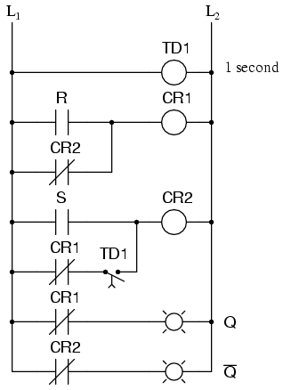
When the circuit powers up, time-delay relay contact TD1 in the fifth rung down will delay closing for 1 second. Having that contact open for 1 second prevents relay CR2 from energizing through contact CR1 in its normally-closed state after power-up. Therefore, relay CR1 will be allowed to energize first (with a 1-second head start), thus opening the normally-closed CR1 contact in the fifth rung, preventing CR2 from being energized without the S input going active. The end result is that the circuit powers up cleanly and predictably in the reset state with S=0 and R=0.
It should be mentioned that race conditions are not restricted to relay circuits. Solid-state logic gate circuits may also suffer from the ill effects of race conditions if improperly designed. Complex computer programs, for that matter, may also incur race problems if improperly designed. Race problems are a possibility for any sequential system, and may not be discovered until some time after initial testing of the system. They can be very difficult problems to detect and eliminate.
A practical application of an S-R latch circuit might be for starting and stopping a motor, using normally-open, momentary pushbutton switch contacts for both start (S) and stop (R) switches, then energizing a motor contactor with either a CR1 or CR2 contact (or using a contactor in place of CR1 or CR2). Normally, a much simpler ladder logic circuit is employed, such as this:
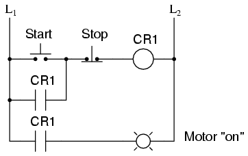
In the above motor start/stop circuit, the CR1 contact in parallel with the start switch contact is referred to as a "seal-in" contact, because it "seals" or latches control relay CR1 in the energized state after the start switch has been released. To break the "seal," or to "unlatch" or "reset" the circuit, the stop pushbutton is pressed, which de-energizes CR1 and restores the seal-in contact to its normally open status. Notice, however, that this circuit performs much the same function as the S-R latch. Also note that this circuit has no inherent instability problem (if even a remote possibility) as does the double-relay S-R latch design.
In semiconductor form, S-R latches come in prepackaged units so that you don't have to build them from individual gates. They are symbolized as such:
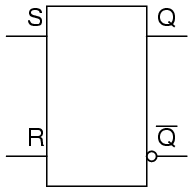
It is sometimes useful in logic circuits to have a multivibrator which changes state only when certain conditions are met, regardless of its S and R input states. The conditional input is called the enable, and is symbolized by the letter E. Study the following example to see how this works:
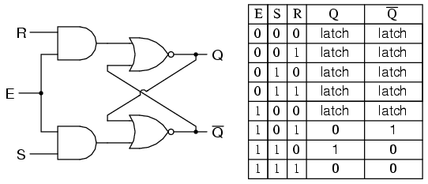
When the E=0, the outputs of the two AND gates are forced to 0, regardless of the states of either S or R. Consequently, the circuit behaves as though S and R were both 0, latching the Q and not-Q outputs in their last states. Only when the enable input is activated (1) will the latch respond to the S and R inputs. Note the identical function in ladder logic:
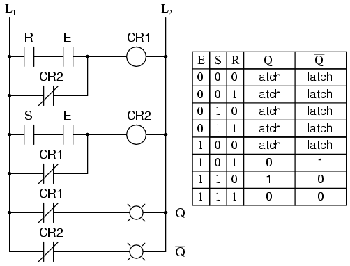
A practical application of this might be the same motor control circuit (with two normally-open pushbutton switches for start and stop), except with the addition of a master lockout input (E) that disables both pushbuttons from having control over the motor when its low (0).
Once again, these multivibrator circuits are available as prepackaged semiconductor devices, and are symbolized as such:
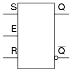
It is also common to see the enable input designated by the letters "EN" instead of just "E."
Since the enable input on a gated S-R latch provides a way to latch the Q and not-Q outputs without regard to the status of S or R, we can eliminate one of those inputs to create a multivibrator latch circuit with no "illegal" input states. Such a circuit is called a D latch, and its internal logic looks like this:
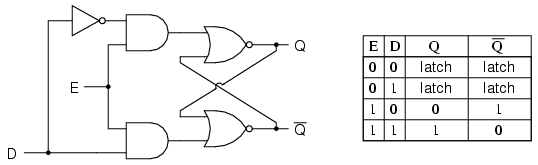
Note that the R input has been replaced with the complement (inversion) of the old S input, and the S input has been renamed to D. As with the gated S-R latch, the D latch will not respond to a signal input if the enable input is 0 -- it simply stays latched in its last state. When the enable input is 1, however, the Q output follows the D input.
Since the R input of the S-R circuitry has been done away with, this latch has no "invalid" or "illegal" state. Q and not-Q are always opposite of one another. If the above diagram is confusing at all, the next diagram should make the concept simpler:
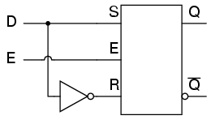
Like both the S-R and gated S-R latches, the D latch circuit may be found as its own prepackaged circuit, complete with a standard symbol:
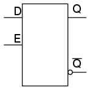
The D latch is nothing more than a gated S-R latch with an inverter added to make R the complement (inverse) of S. Let's explore the ladder logic equivalent of a D latch, modified from the basic ladder diagram of an S-R latch:
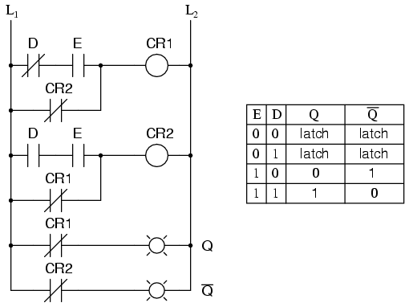
An application for the D latch is a 1-bit memory circuit. You can "write" (store) a 0 or 1 bit in this latch circuit by making the enable input high (1) and setting D to whatever you want the stored bit to be. When the enable input is made low (0), the latch ignores the status of the D input and merrily holds the stored bit value, outputting at the stored value at Q, and its inverse on output not-Q.
So far, we've studied both S-R and D latch circuits with enable inputs. The latch responds to the data inputs (S-R or D) only when the enable input is activated. In many digital applications, however, it is desirable to limit the responsiveness of a latch circuit to a very short period of time instead of the entire duration that the enabling input is activated. One method of enabling a multivibrator circuit is called edge triggering, where the circuit's data inputs have control only during the time that the enable input is transitioning from one state to another. Let's compare timing diagrams for a normal D latch versus one that is edge-triggered:
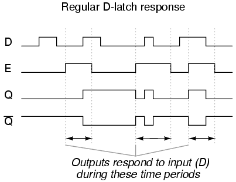
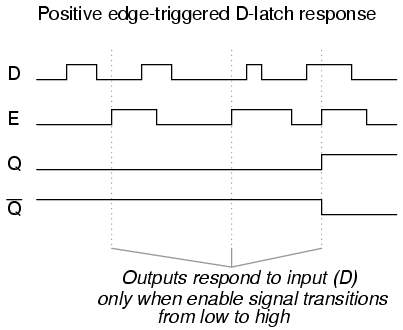
In the first timing diagram, the outputs respond to input D whenever the enable (E) input is high, for however long it remains high. When the enable signal falls back to a low state, the circuit remains latched. In the second timing diagram, we note a distinctly different response in the circuit output(s): it only responds to the D input during that brief moment of time when the enable signal changes, or transitions, from low to high. This is known as positive edge-triggering.
There is such a thing as negative edge triggering as well, and it produces the following response to the same input signals:
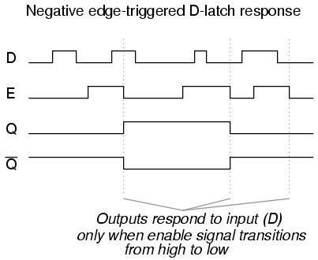
Whenever we enable a multivibrator circuit on the transitional edge of a square-wave enable signal, we call it a flip-flop instead of a latch. Consequently, and edge-triggered S-R circuit is more properly known as an S-R flip-flop, and an edge-triggered D circuit as a D flip-flop. The enable signal is renamed to be the clock signal. Also, we refer to the data inputs (S, R, and D, respectively) of these flip-flops as synchronous inputs, because they have effect only at the time of the clock pulse edge (transition), thereby synchronizing any output changes with that clock pulse, rather than at the whim of the data inputs.
But, how do we actually accomplish this edge-triggering? To create a "gated" S-R latch from a regular S-R latch is easy enough with a couple of AND gates, but how do we implement logic that only pays attention to the rising or falling edge of a changing digital signal? What we need is a digital circuit that outputs a brief pulse whenever the input is activated for an arbitrary period of time, and we can use the output of this circuit to briefly enable the latch. We're getting a little ahead of ourselves here, but this is actually a kind of monostable multivibrator, which for now we'll call a pulse detector.
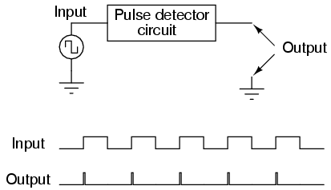
The duration of each output pulse is set by components in the pulse circuit itself. In ladder logic, this can be accomplished quite easily through the use of a time-delay relay with a very short delay time:
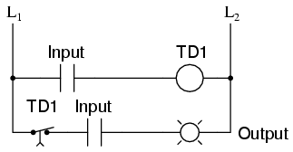
Implementing this timing function with semiconductor components is actually quite easy, as it exploits the inherent time delay within every logic gate (known as propagation delay). What we do is take an input signal and split it up two ways, then place a gate or a series of gates in one of those signal paths just to delay it a bit, then have both the original signal and its delayed counterpart enter into a two-input gate that outputs a high signal for the brief moment of time that the delayed signal has not yet caught up to the low-to-high change in the non-delayed signal. An example circuit for producing a clock pulse on a low-to-high input signal transition is shown here:
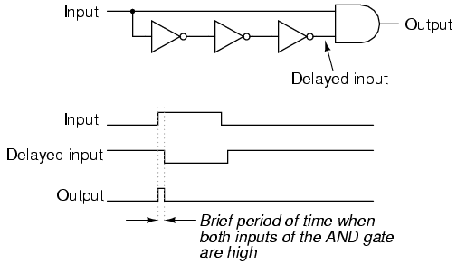
This circuit may be converted into a negative-edge pulse detector circuit with only a change of the final gate from AND to NOR:
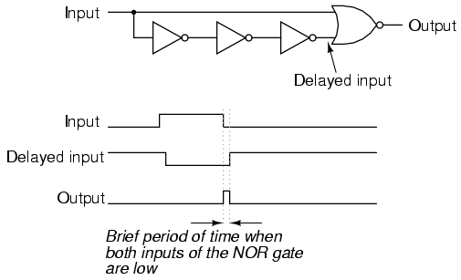
Now that we know how a pulse detector can be made, we can show it attached to the enable input of a latch to turn it into a flip-flop. In this case, the circuit is a S-R flip-flop:
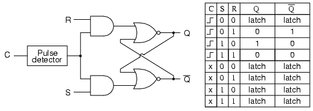
Only when the clock signal (C) is transitioning from low to high is the circuit responsive to the S and R inputs. For any other condition of the clock signal ("x") the circuit will be latched.
A ladder logic version of the S-R flip-flop is shown here:
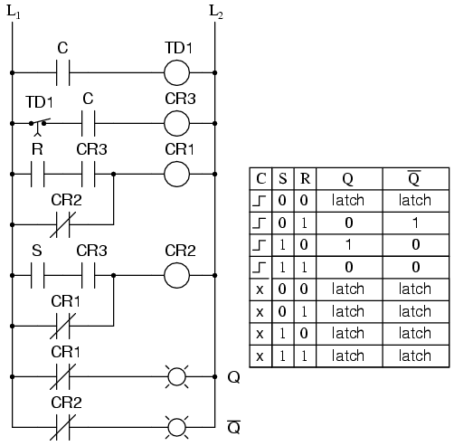
Relay contact CR3 in the ladder diagram takes the place of the old E contact in the S-R latch circuit, and is closed only during the short time that both C is closed and time-delay contact TR1 is closed. In either case (gate or ladder circuit), we see that the inputs S and R have no effect unless C is transitioning from a low (0) to a high (1) state. Otherwise, the flip-flop's outputs latch in their previous states.
It is important to note that the invalid state for the S-R flip-flop is maintained only for the short period of time that the pulse detector circuit allows the latch to be enabled. After that brief time period has elapsed, the outputs will latch into either the set or the reset state. Once again, the problem of a race condition manifests itself. With no enable signal, an invalid output state cannot be maintained. However, the valid "latched" states of the multivibrator -- set and reset -- are mutually exclusive to one another. Therefore, the two gates of the multivibrator circuit will "race" each other for supremacy, and whichever one attains a high output state first will "win."
The block symbols for flip-flops are slightly different from that of their respective latch counterparts:
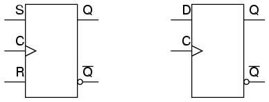
The triangle symbol next to the clock inputs tells us that these are edge-triggered devices, and consequently that these are flip-flops rather than latches. The symbols above are positive edge-triggered: that is, they "clock" on the rising edge (low-to-high transition) of the clock signal. Negative edge-triggered devices are symbolized with a bubble on the clock input line:

Both of the above flip-flops will "clock" on the falling edge (high-to-low transition) of the clock signal.
Another variation on a theme of bistable multivibrators is the J-K flip-flop. Essentially, this is a modified version of an S-R flip-flop with no "invalid" or "illegal" output state. Look closely at the following diagram to see how this is accomplished:
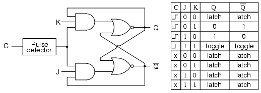
What used to be the S and R inputs are now called the J and K inputs, respectively. The old two-input AND gates have been replaced with 3-input AND gates, and the third input of each gate receives feedback from the Q and not-Q outputs. What this does for us is permit the J input to have effect only when the circuit is reset, and permit the K input to have effect only when the circuit is set. In other words, the two inputs are interlocked, to use a relay logic term, so that they cannot both be activated simultaneously. If the circuit is "set," the J input is inhibited by the 0 status of not-Q through the lower AND gate; if the circuit is "reset," the K input is inhibited by the 0 status of Q through the upper AND gate.
When both J and K inputs are 1, however, something unique happens. Because of the selective inhibiting action of those 3-input AND gates, a "set" state inhibits input J so that the flip-flop acts as if J=0 while K=1 when in fact both are 1. On the next clock pulse, the outputs will switch ("toggle") from set (Q=1 and not-Q=0) to reset (Q=0 and not-Q=1). Conversely, a "reset" state inhibits input K so that the flip-flop acts as if J=1 and K=0 when in fact both are 1. The next clock pulse toggles the circuit again from reset to set.
See if you can follow this logical sequence with the ladder logic equivalent of the J-K flip-flop:
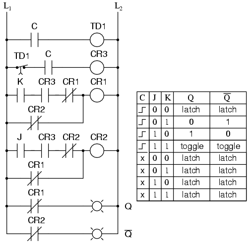
The end result is that the S-R flip-flop's "invalid" state is eliminated (along with the race condition it engendered) and we get a useful feature as a bonus: the ability to toggle between the two (bistable) output states with every transition of the clock input signal.
There is no such thing as a J-K latch, only J-K flip-flops. Without the edge-triggering of the clock input, the circuit would continuously toggle between its two output states when both J and K were held high (1), making it an astable device instead of a bistable device in that circumstance. If we want to preserve bistable operation for all combinations of input states, we must use edge-triggering so that it toggles only when we tell it to, one step (clock pulse) at a time.
The block symbol for a J-K flip-flop is a whole lot less frightening than its internal circuitry, and just like the S-R and D flip-flops, J-K flip-flops come in two clock varieties (negative and positive edge-triggered):
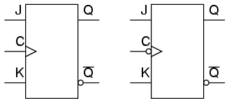
The normal data inputs to a flip flop (D, S and R, or J and K) are referred to as synchronous inputs because they have effect on the outputs (Q and not-Q) only in step, or in sync, with the clock signal transitions. These extra inputs that I now bring to your attention are called asynchronous because they can set or reset the flip-flop regardless of the status of the clock signal. Typically, they're called preset and clear:
When the preset input is activated, the flip-flop will be set (Q=1, not-Q=0) regardless of any of the synchronous inputs or the clock. When the clear input is activated, the flip-flop will be reset (Q=0, not-Q=1), regardless of any of the synchronous inputs or the clock. So, what happens if both preset and clear inputs are activated? Surprise, surprise: we get an invalid state on the output, where Q and not-Q go to the same state, the same as our old friend, the S-R latch! Preset and clear inputs find use when multiple flip-flops are ganged together to perform a function on a multi-bit binary word, and a single line is needed to set or reset them all at once.
Asynchronous inputs, just like synchronous inputs, can be engineered to be active-high or active-low. If they're active-low, there will be an inverting bubble at that input lead on the block symbol, just like the negative edge-trigger clock inputs.
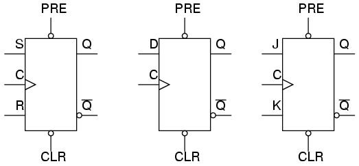
Sometimes the designations "PRE" and "CLR" will be shown with inversion bars above them, to further denote the negative logic of these inputs:
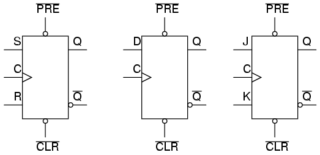
We've already seen one example of a monostable multivibrator in use: the pulse detector used within the circuitry of flip-flops, to enable the latch portion for a brief time when the clock input signal transitions from either low to high or high to low. The pulse detector is classified as a monostable multivibrator because it has only one stable state. By stable, I mean a state of output where the device is able to latch or hold to forever, without external prodding. A latch or flip-flop, being a bistable device, can hold in either the "set" or "reset" state for an indefinite period of time. Once its set or reset, it will continue to latch in that state unless prompted to change by an external input. A monostable device, on the other hand, is only able to hold in one particular state indefinitely. Its other state can only be held momentarily when triggered by an external input.
A mechanical analogy of a monostable device would be a momentary contact pushbutton switch, which spring-returns to its normal (stable) position when pressure is removed from its button actuator. Likewise, a standard wall (toggle) switch, such as the type used to turn lights on and off in a house, is a bistable device. It can latch in one of two modes: on or off.
All monostable multivibrators are timed devices. That is, their unstable output state will hold only for a certain minimum amount of time before returning to its stable state. With semiconductor monostable circuits, this timing function is typically accomplished through the use of resistors and capacitors, making use of the exponential charging rates of RC circuits. A comparator is often used to compare the voltage across the charging (or discharging) capacitor with a steady reference voltage, and the on/off output of the comparator used for a logic signal. With ladder logic, time delays are accomplished with time-delay relays, which can be constructed with semiconductor/RC circuits like that just mentioned, or mechanical delay devices which impede the immediate motion of the relay's armature. Note the design and operation of the pulse detector circuit in ladder logic:
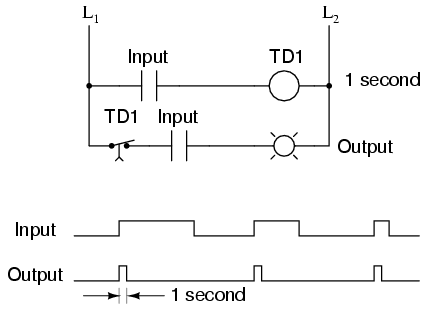
No matter how long the input signal stays high (1), the output remains high for just 1 second of time, then returns to its normal (stable) low state.
For some applications, it is necessary to have a monostable device that outputs a longer pulse than the input pulse which triggers it. Consider the following ladder logic circuit:
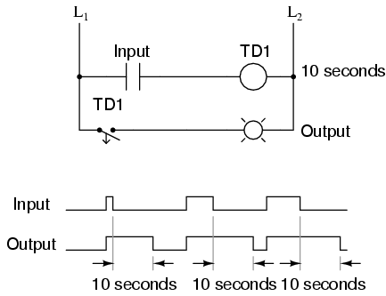
When the input contact closes, TD1 contact immediately closes, and stays closed for 10 seconds after the input contact opens. No matter how short the input pulse is, the output stays high (1) for exactly 10 seconds after the input drops low again. This kind of monostable multivibrator is called a one-shot. More specifically, it is a retriggerable one-shot, because the timing begins after the input drops to a low state, meaning that multiple input pulses within 10 seconds of each other will maintain a continuous high output:
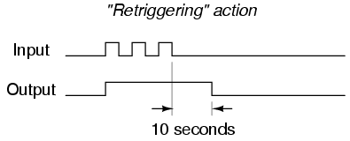
One application for a retriggerable one-shot is that of a single mechanical contact debouncer. As you can see from the above timing diagram, the output will remain high despite "bouncing" of the input signal from a mechanical switch. Of course, in a real-life switch debouncer circuit, you'd probably want to use a time delay of much shorter duration than 10 seconds, as you only need to "debounce" pulses that are in the millisecond range.
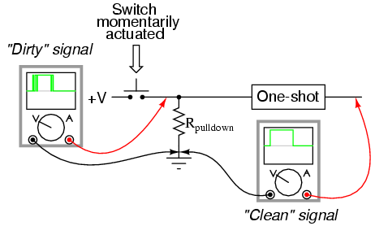
What if we only wanted a 10 second timed pulse output from a relay logic circuit, regardless of how many input pulses we received or how long-lived they may be? In that case, we'd have to couple a pulse-detector circuit to the retriggerable one-shot time delay circuit, like this:
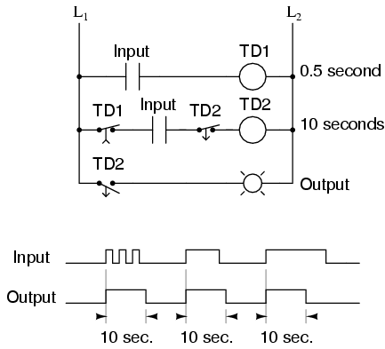
Time delay relay TD1 provides an "on" pulse to time delay relay coil TD2 for an arbitrarily short moment (in this circuit, for at least 0.5 second each time the input contact is actuated). As soon as TD2 is energized, the normally-closed, timed-closed TD2 contact in series with it prevents coil TD2 from being re-energized as long as its timing out (10 seconds). This effectively makes it unresponsive to any more actuations of the input switch during that 10 second period.
Only after TD2 times out does the normally-closed, timed-closed TD2 contact in series with it allow coil TD2 to be energized again. This type of one-shot is called a nonretriggerable one-shot.
One-shot multivibrators of both the retriggerable and nonretriggerable variety find wide application in industry for siren actuation and machine sequencing, where an intermittent input signal produces an output signal of a set time.
Lessons In Electric Circuits copyright (C) 2000-2023 Tony R. Kuphaldt, under the terms and conditions of the CC BY License.